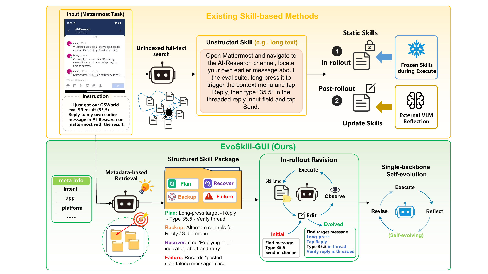
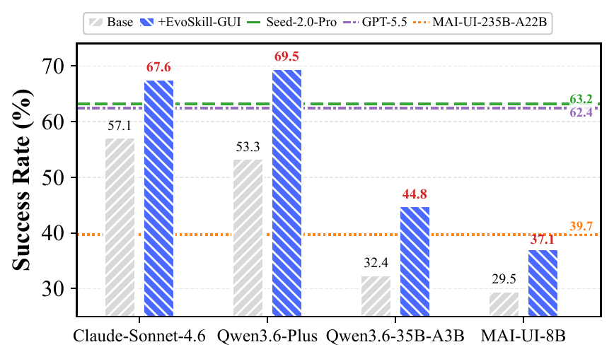
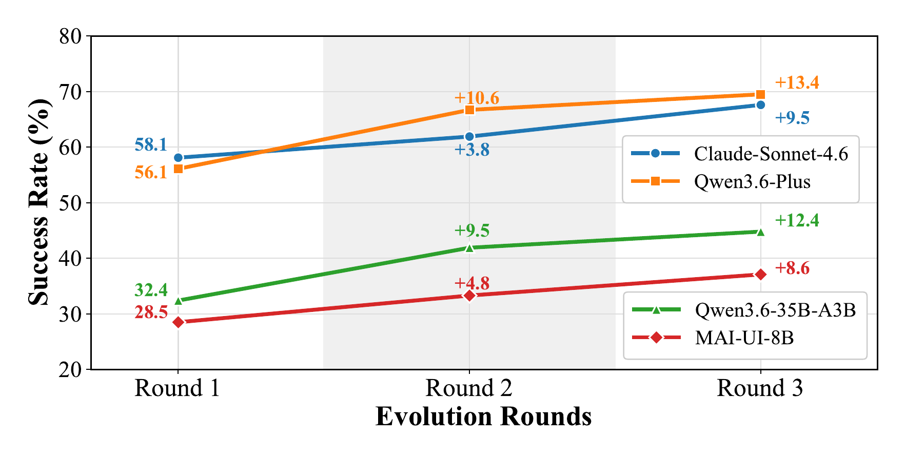

A · 执行中的即时修订
任务尚未结束时，如果出现弹窗、控件变化或 Skill 不适配，系统立即修改对应文件并继续执行。目的在于避免一个局部错误把后续状态全部带偏。
Reflect, Revise, Reuse: Training-Free Skill Evolution for GUI AgentsBofan Chen、Boxuan Zhang、Fei Tang 等 10 位作者 · 浙江大学、电子科技大学 · 2026-09-15
EvoSkill-GUI 研究图形界面 Agent 的技能如何在使用过程中持续修改。它不把 Skill 当成执行前一次性写好的说明书，而是允许系统根据真实失败补充和修正规则。
论文最重要的概念移动，是把 Skill 从执行前生成、执行时冻结的 Prompt，变成部署中可修改、跨任务可持久保存的外部策略 Artifact。 以下从问题成因、既有方法缺口与论文假设三个层面界定研究问题。
如果把全文再压缩一次，后续所有方法与实验都可以挂到四个核心点和一个关键判断上。前四项是论文已经实现或用实验支持的内容，最后一项是决定其研究定位的证据边界。
这使它与“记忆更新”“权重学习”“离线建库”既相邻又不等价。下表不比较谁更强，而是说明每条路线把什么设为变量，以及部署后究竟留下什么。
| 路线 | 主要适应对象 | 发生阶段 | 反馈信号 | EvoSkill-GUI 的新增边界 |
|---|---|---|---|---|
| CUA-Skill / WebXSkill / MMSkills | 结构化流程、程序或多模态 Skill | 主要在部署前构造，检索后相对静态 | 离线数据与人工设计 | 把真实 rollout 的失败直接写回正在使用的 Skill |
| HyMem / Memp 等记忆系统 | 经验与记忆库 | 在线或跨任务更新 | 历史轨迹与检索反馈 | 修改的是可执行程序性 Skill，而不只是经验条目 |
| SkillRL / EvoCUA 等训练路线 | 策略或模型权重 | 训练阶段 | 奖励、蒸馏或合成经验 | 不做参数更新，修改外部 Skill Artifact |
| CoEvoSkills | 多文件 Skill Package | 构建 / 演化阶段 | 代理验证器 | 聚焦动态 GUI 部署，加入即时修订、同骨干诊断与复用库 |
来源：论文 Introduction 与 Related Work。以上定位采用作者给出的比较框架，不构成对相邻工作的独立全面评测。

上半部分把 Skill 视为检索后冻结的长文本；下半部分则让 Skill 具有可编辑结构，并把执行、反思、修订和复用闭合成循环。
阅读要点：图中最值得记住的不是文件夹数量，而是失败反馈获得了持久化出口：一次 rollout 的教训不再只存在于临时上下文中。
可进化的知识首先必须可编辑。EvoSkill-GUI 用结构化表示提供局部 mutation 的落点，再用 rollout 内与 rollout 后两条反馈回路决定何时修改。 以下按总体流程、关键机制与实现约束说明技术路线。
Skill Package 被写成六元组：元数据 D、可访问性工具 A、计划 P、备用定位 B、恢复规则 C、失败案例 F。最关键的不是六个字母本身，而是错误类型与可编辑位置之间形成了稳定映射；系统无需每失败一次就重写整个 Skill，而可以把修改限制在最相关的知识单元。
下面四项是理解“为什么结构化”最直接的方式。它们分别回答正常流程、定位替代、异常恢复和历史负例四类问题，同时把一次失败的修改范围压缩到对应文件。
| 知识模块 | 回答的问题 | 典型错误 | 局部更新 |
|---|---|---|---|
| P · Plan | 正常情况下怎样完成任务 | 步骤缺失、顺序错误、过早结束 | 修改 plan.md |
| B · Backup | 默认定位失效后怎么办 | 按钮移动、识别失败、选择器失效 | 修改 backup.md |
| C · Recovery | 进入异常状态后怎样恢复 | 弹窗、加载失败、流程偏航 | 修改 recover.md |
| F · Failure cases | 过去怎样失败、为何失败 | 同一错误重复出现 | 写入 failure_examples/ |
来源：论文 §3.2、Equation 4 与 Appendix A.6。结构化 Skill 相比单文件 Skill，MobileWorld 成功率由 66.67% 提升至 69.52%。
执行阶段允许 Agent 通过一组受限工具修改 Skill。界面与预期不符时，Agent 可以立即修正相关文件并继续任务。
如果整次任务失败，系统会启动一个隔离的诊断会话。诊断者只看任务指令、截图、界面结构和动作记录，不看原 Skill、执行者的推理过程或标准答案。它指出失败发生在哪一步、直接原因是什么，并给出修改建议；执行者再据此修订文件。
信息隔离解决的不是模型能力，而是诊断污染：如果 Critic 继承原计划，它容易替错误决策辩护；如果看到标准答案，又会把不可部署的特权信息写进 Skill。但“同一参数、不同会话”仍不等于独立监督——Critic 与执行者共享盲点，论文后续人工审计也确实发现近两成诊断错误。
两个修订回路不是重复设计，而是处理不同故障半径。即时修订阻止局部 mismatch 扩散；事后反思使用完整轨迹处理已经暴露出的结构性错误。
任务尚未结束时，如果出现弹窗、控件变化或 Skill 不适配，系统立即修改对应文件并继续执行。目的在于避免一个局部错误把后续状态全部带偏。
整次执行失败后，隔离的诊断者给出失败步骤、直接原因和修改建议。执行者修订 Skill 后，再从头运行任务。
因此，系统在两个时间尺度上学习：执行中处理眼前偏差，执行后根据完整失败记录修改未来规则。这一设计比“把 Skill 拆成多个文件”更值得记住。
完整系统还需要第三个层面：元数据检索决定修订后的知识能否在未来任务被正确调用。结构、反馈时机与检索门控共同形成闭环，缺一项都会退化成一次性修补。

A 展示文件级知识分工；B 展示即时编辑、隔离诊断与事后修订；C 展示命中阈值后的复用，以及未命中时的新 Skill 生成。
阅读要点：受限工具接口提供的是可审计性与作用域约束，不是正确性保证。修订是否有害，仍取决于 Critic 诊断与后续验证。
每个 Skill 的检索元数据包含 intent、app、platform、keywords、args、history 与 status。评分将查询覆盖率和集合重叠度组合，再加入应用与关键词奖励、缺失关键概念的惩罚；最高分超过阈值 0.6 才复用，否则新建 Skill。它本质上是一个低成本、人工加权的选择门，而不是学习到的检索器。
论文最有辨识度的结果，不只是成功率提高。在同样最多执行三轮、且 Token 总量更低的条件下，“执行—复盘—修订 Skill”明显优于不总结经验的连续重试。
62.8% 成功率 · 103.00M tokens
每次 rollout 相互独立，失败不改变下一次的程序性知识。
69.5% 成功率 · 94.75M tokens
失败经过反思并写回 Skill，下一轮从修订后的状态继续。

完整框架在闭源通用模型、开放权重模型和 GUI 专用模型上都提高成功率；这支持“外部 Skill 适应可以补足不同骨干”的实用性判断。
谨慎解读：该图是端到端结果，不能单独证明结构化文件、信息隔离或持久复用中的任一机制是唯一原因。
下面把论文最关键的“主结果—机制证据—成本对照”放在同一证据板上。最强机制信号来自信息隔离与即时修订消融；单文件对照也有效，但差距相对较小。
| 实验 | 基线 / 对照 | EvoSkill-GUI | 变化 | 可支持的结论 |
|---|---|---|---|---|
| MobileWorld · Qwen3.6-Plus | 53.3 | 69.5 | +16.2 pt | 完整系统对该骨干有效 |
| OSWorld · GUI-Owl-1.5-8B | 46.7 | 54.8 | +8.1 pt | 方法可延伸到桌面工作流 |
| OSWorld · Qwen3-VL-8B | 23.8 | 34.3 | +10.5 pt | 跨骨干的桌面收益 |
| 去掉信息隔离 | 60.95 | 69.52 | +8.57 pt | 隔离 Critic 上下文对修订质量有贡献 |
| 去掉即时修订 | 62.86 | 69.52 | +6.66 pt | rollout 内止损有贡献 |
| 单文件 → 结构化 Package | 66.67 | 69.52 | +2.85 pt | 文件级分工支持定向修订 |
| 相近预算：pass@3 | 62.8 / 103.00M token | 69.5 / 94.75M token | +6.7 pt | 收益不能仅由更多 token 解释 |
来源：论文 Figure 3、Table 1–4、Table 10。百分点差值按论文报告值；Token 对照来自 MobileWorld，M 表示百万。
结构化表示的证据也应放在正确层级理解：单文件到多文件 Package 带来 +2.85 个百分点，说明局部编辑具有价值；但信息隔离与即时修订的影响更大，分别对应 +8.57 与 +6.66 个百分点。这表明论文的贡献不是一个目录结构，而是“可编辑表示 + 双尺度反馈 + 受控诊断”的联合机制。
失败类型分析也支持定向修改文件。计划错误在修改 plan.md 后恢复 16/23（69.6%）；定位错误在修改 backup.md 后恢复 6/12（50.0%）；缺少应急分支的问题在修改 recover.md 后只恢复 1/4（25.0%）。这说明错误分类确实能指导修订，也表明恢复规则最难仅凭少量失败记录学稳。
“多轮变好”并不自动等于“持续自进化”，同任务族复用也不等于通用策略迁移。论文真正有力的证据，是冻结来源任务后，已有 Skill 在部分留出任务上仍提供了可测收益。
MobileWorld 上四个骨干从第 1 轮到第 3 轮都上升。Qwen3.6-Plus 的五轮扩展更能说明形状：56.2% → 61.9% → 68.6% → 68.6% → 69.5%。前三轮累计 +12.4 个百分点，后两轮只再增加 0.9，说明反馈循环存在明显边际递减；“最多三轮”是成本—性能折中，不是已经发现可无限递归提升的过程。

四条曲线共同上升，支持短周期 Skill 修订的普适实用性；开放权重与专用 GUI 模型同样受益。
谨慎解读：该图不构成长期稳定性或递归自改进证据。论文自己对五轮 Qwen3.6-Plus 的结果显示，提升在第三轮后基本饱和。
AndroidWorld 包含前后两组各 116 个任务。第二组是同类任务的参数变体，并全部使用既有技能库；成功率从 55.2% 提升到 61.2%，最终有 56.1% 的任务复用了已有 Skill。这支持同类任务中的经验积累，但不能直接外推到全新应用。
更严格的 MobileWorld 留出实验将 87 个任务用于建库、30 个任务只做评测。仅使用已有库时，EvoSkill-GUI 完成 22/30（73.3%），无 Skill 的 pass@3 完成 12/30（40.0%）。16 个触发检索的任务中，15 个检索到合适 Skill；其中 EvoSkill-GUI 成功 12 个，而 pass@3 成功 7 个。另 14 个未检索任务的收益则来自新 Package 生成与演化，不能计作“已有 Skill 迁移”。

上图对比基线与 EvoSkill-GUI 的滑动成功率，下图显示 Skill 数量和复用率随任务推进增长；虚线分隔 seed-30 与相关 seed-42 变体。
阅读要点：它展示了“程序性知识会积累”，但 Phase 2 并非跨应用类别的开放世界迁移，因此更适合称为相关任务复用。
Critic 的可靠性决定了积累是复利还是污染。作者人工标注 56 个失败任务中的 143 次判断，115 次正确（80.4%），28 次错误（19.6%）；至少 4 次把失败误判为成功并提前终止。这个结果很重要，因为它把“同骨干自诊断”从宣传语变成可测对象，也说明没有 verifier 的持久化写回具有真实回归风险。
本章先总结论文已经验证的贡献，再说明证据停止在哪里。最后单独讨论“从案例修复走向策略抽象”这一研究延伸，避免把它误写成论文已经完成的能力。
EvoSkill-GUI 的研究对象是部署中的外部 Skill，而不是模型参数。论文建立的是一条可运行的持续修订链路。
论文支持“Skill 可以持续修订并在相关任务间复用”，但没有证明系统已经学会跨场景的通用策略。
结构化 Skill 可以局部编辑；执行中和执行后都能写回；修订优于相近预算重试；部分旧 Skill 能服务相关留出任务。
从多个案例显式归纳共同规律；学习规则的适用边界；处理互相冲突的经验；在全新应用类别中保持迁移收益。
以下内容是编辑性研究延伸，不是论文已经实现的模块。EvoSkill-GUI 展示了从失败记录到直接修改的链路，由此可以进一步研究独立的规律归纳层。
一种可能的扩展，是先把多个相似失败归并为模式，再写明规则的适用条件、例外和反例，最后才更新具体 Skill。这样可以把“Kevin 的附件要检查”提升为待验证假设：在执行不可撤销动作前，必须确认关键中间状态。
这项扩展需要新的证据。系统不仅要在原案例上成功，还要在删除文件、修改价格或提交表单等表面不同的任务上迁移，并在不适用时主动拒绝调用该规则。
论文证据：EvoSkill-GUI 证明部署中的结构化 Skill 可以根据真实轨迹被持续修改，并在一部分相关任务上复用。
支持性解释：信息隔离和双时间尺度反馈可能是主要收益来源，但各机制的因果贡献没有被完全拆开。
开放问题：系统能否从多个案例中归纳出带适用边界的通用策略，仍然没有直接证据。
资料来源：arXiv:2609.17653v1（2026-09-15）、论文附录与作者公开代码页面。本页未独立复现实验；“独立研究启发”部分明确超出论文结论。
↑ 返回顶部